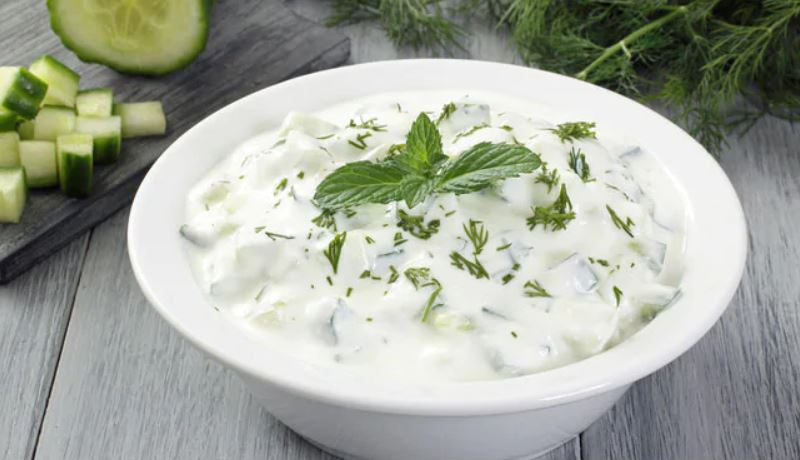

Tzatziki dip,Lebanese Hung Curd and Cucumbber Dip
Ingrediants Required
1 cup Greek yogurt / Hung curd / Strained yogurt (around 300 grams) ,
1 big Cucumber ,
1 teaspoon Shredded Garlic ,
1 tablespoon Lemon Juice ,
¼ cup Dill leaves, Chopped ,
Salt to taste ,
Black Pepper to taste ,
3 tablespoon Extra virgin olive oil ,
Procedure
In a bowl, Peel the cucumber and grate it using large blade grater.
Take a clean muslin cloth or good quality paper towel. Place shredded cucumber in a muslin cloth. Squeeze the cucumber with a muslin cloth to release liquid. Place the bowl underneath to Preserve the liquid. You can add this into your soup, dal or curry or you can simply apply to your face for shiny skin. :). Or just drink it.
Take curd/yogurt into a bowl. Add Squeezed cucumber, garlic, pepper, Chopped dell leaves, Lemon juice, Olive oil, and salt. Mix them very well. Cover it with cling wrap or with lid.
Refrigerate it for at least one hour.
Greek Tzatziki Sauce is ready. Serve it with some Falafel, pita bread or with chopped vegetables. It tastes awesome in Falafel Sandwiches As well.